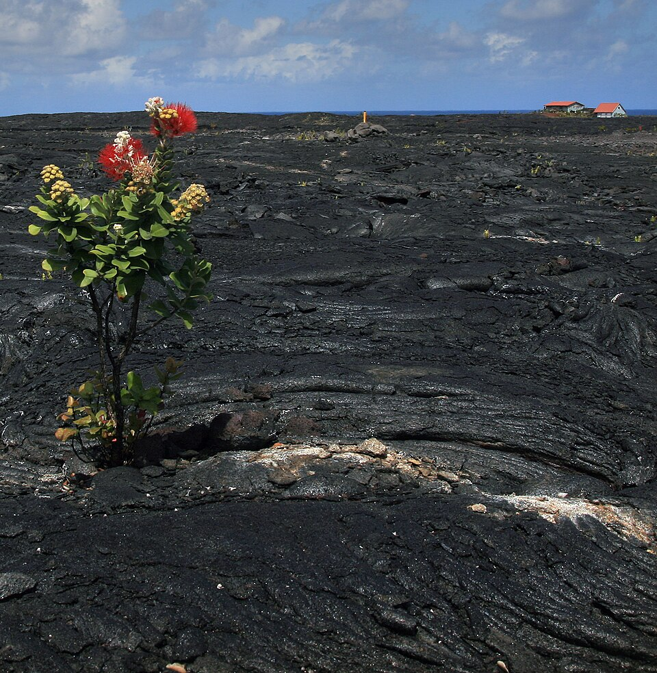
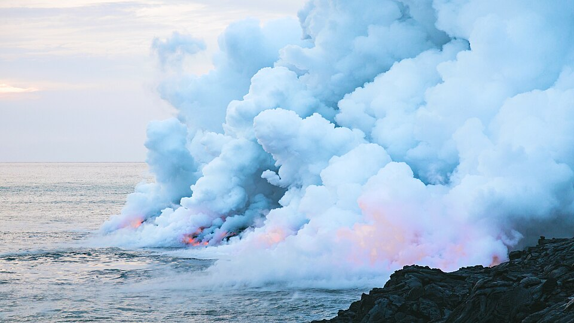
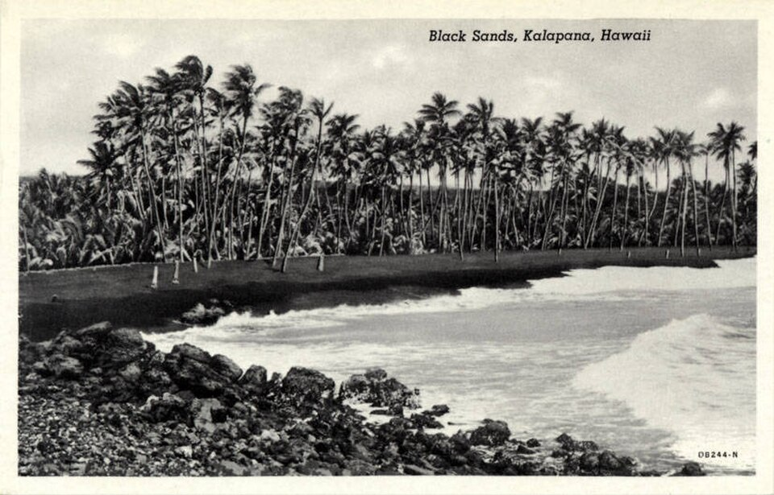
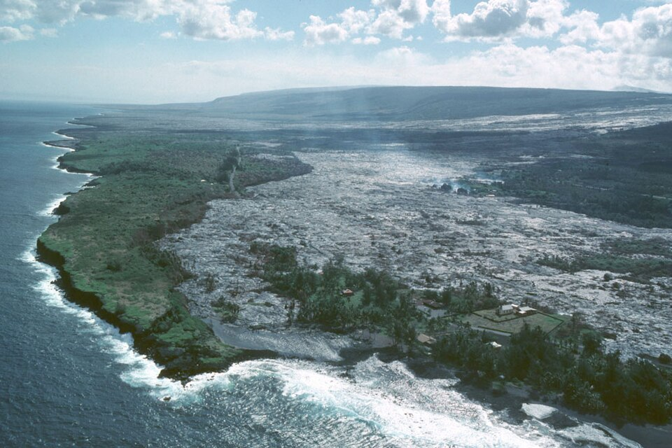

Kalapana

Kalapana is often remembered as a town destroyed by lava. In 1990, flows from Kīlauea buried homes, roads, coconut groves, and the famous black sand beach at Kaimū beneath dozens of feet of volcanic rock. Images of houses burning slowly before advancing pāhoehoe became some of the most recognizable scenes in the modern history of Hawaiʻi Island.
Yet Kalapana,as a community, existed for centuries before the eruption, and it did not disappear even when the land was buried. It had long been a celebrated place within Puna: a center of fishing, dryland agriculture, religious importance, chiefly history, and deeply rooted Native Hawaiian family life. Its people learned to live on young volcanic land and work within the confines of the environment.
Families relocated, returned, rebuilt, and continued gathering near the edge of the flow. The legal boundaries of their lands remained even where the ground beneath them had been stacked dozens of feet higher. New homes rose on the hardened lava, young coconut trees were planted, and the community’s name continued to identify far more than a point on an old map or a forgotten town in a history book.
A Celebrated Place
The name Kalapana has several layers of meaning. Kala can carry meanings including to announce, loosen, free, forgive, or release. Pana typically refers to a pulse, beat, or celebrated place. Together, Kalapana has been interpreted as “to announce a noted place,” “famed land,” or a place whose importance deserves recognition.
That understanding fits Kalapana’s historical character. In Hawaiian thought, a wahi pana is a place made significant through genealogy, stories, events, natural features, and the presence of generations who knew and cared for it. Kalapana’s name reflects its standing as a landscape of cultural memory carrying those stories of the past.
The name is also associated with an ancient chief, Kalapana, known in genealogical traditions as Kalapanakuʻioʻiomoa. He belonged to the chiefly line that ruled Hawaiʻi Island generations before Kamehameha I.
Whether the district was directly named for the chief or the chief and land became linked through later tradition, the association reinforces Kalapana’s identity as a place connected to chiefly authority, genealogy, and the restoration of order. His descendants continued the ruling line of Hawaiʻi Island through later chiefs including Līloa and ʻUmi-a-Līloa, eventually forming part of the genealogy of Kamehameha I.
Pāʻao and Wahaʻula
Kalapana’s importance was also tied to Wahaʻula Heiau, once located along the Puna coast near the eastern boundary of Hawaiʻi Volcanoes National Park. Tradition associates the heiau with Pāʻao, a priest said to have arrived from Kahiki and helped establish a new chiefly and religious order on Hawaiʻi Island.
Wahaʻula became one of the island’s most significant religious sites and was identified as a luakini, a temple associated with high chiefs, state ceremonies, warfare, and sacrifice. Its presence connected the Kalapana region to the highest levels of Hawaiian political and spiritual authority.
After the abolition of the kapu system in 1819, Wahaʻula was abandoned. Its stone walls remained on the coast as the surrounding religious and political world changed. Much later, lava reached the site during the long Puʻu ʻŌʻō eruption. The heiau was surrounded and then buried, joining the homes, roads, and landscapes of Kalapana beneath the expanding flows.
Life on Young Lava
Kalapana was built on terrain that appears harsh and inhospitable. The coastline was rugged, and fresh water often had to be obtained from springs, pools, and places where groundwater emerged near the sea.
Nevertheless, Native Hawaiians created a productive and densely settled community. The ahupuaʻa system connected resources from upland forests to the ocean. Families combined fishing, gathering, small-scale agriculture, and bartered.
Kalapana Bay provided an important canoe landing along a coastline where safe access to the ocean could be difficult. Fishing became central to the local economy and daily life.
On land, residents cultivated crops suited to drier and rockier conditions. ʻUala, or sweet potato, could be planted in pockets, cracks, and mounds where organic material and moisture accumulated. Uhi (yams), gourds, melons, and other plants were also grown within a carefully managed landscape that appeared barren.

Kalapana Before the Modern Road
When missionary William Ellis traveled through Puna in 1823, he encountered a populated coastal district where Hawaiians thrived among a broad expanses of lava. He described communities, cultivated plots, and numerous houses in places that outsiders might have assumed were incapable of supporting a substantial population.
Kalapana’s physical isolation slowed some of the transformations occurring elsewhere in Hawaiʻi. The district lacked the deep harbor needed to become a major commercial port, and its young lava, limited water, and shallow soils discouraged the development of large sugar plantations or any major agricultural ventures.
That did not shield Kalapana from disease, population decline, land privatization, or the religious changes sweeping the islands. Christian missions reached the district, and churches became new centers of community life. The Star of the Sea Painted Church became one of the most recognizable examples and serves the community to this day.
The church later became famous not only for its artwork, but for its escape from the lava. As flows advanced toward Kalapana in 1990, residents and volunteers moved the wooden building away from its original location. While much of the surrounding community was lost, the church survived as a relocated remnant of the old town.
The Māhele and later systems of private ownership also altered the relationship between families and the land. Written deeds, taxes, leases, and sales replaced older systems of use and authority. Some Native Hawaiian families lost control of ancestral lands, while larger landowners accumulated extensive portions of Puna.
Even so, many coastal kuleana parcels remained in local families.
Beyond the Plantation Economy
Sugar transformed much of Hawaiʻi Island, but Kalapana remained at the margins of the plantation system. Industrial cane required substantial water, accessible transportation, and broad areas that could be cultivated efficiently. Kalapana’s fractured lava and lack of streams made plantation agriculture difficult and expensive.
The absence of large cane fields helped preserve a different pattern of life. Instead of plantation camps filled with imported laborers, Kalapana remained, generally, a community of small family holdings, fishers, farmers, and ranchers.
Cattle and horses became part of that world. Ranching in Kalapana did not resemble the large open pastures of Waimea. Animals ranged through brush, forest, and uneven lava where ordinary ranching methods were difficult. Local paniolo developed the ability to track and rope wild or semi-wild cattle across sharp and broken volcanic ground.
The Kamelamela Lava Cowboys
The Kamelamela family became especially associated with Kalapana’s cattle culture. Family lands served as a gathering and holding area for livestock, and members of the ʻohana gained reputations as skilled horsemen and wild-cattle ropers.
The work demanded an intimate knowledge of the terrain. Riders moved through narrow trails, dense vegetation, hidden cracks, and jagged lava and trained horses and mules helped guide animals back toward family pens and more manageable ground.
When lava threatened Kalapana in 1990, these families had to evacuate more than family pictures and household possessions. Cattle and horses scattered across the area also had to be found and moved before roads and trails were cut off. The eruption ultimately buried holding areas, grazing grounds, and paths associated with Kalapana’s lava cowboys. Surviving animals were relocated or sold, and descendants carried their horsemanship into other parts of Puna and Hawaiʻi Island.
Kalapana During World War II
World War II briefly transformed the isolated coastline into a military frontier. After the attack on Pearl Harbor, Hawaiʻi was placed under martial law, and exposed coastal communities were viewed as possible landing points for an enemy invasion.
Military defenses were established around Kalapana and Kaimū. Concrete pillboxes and observation positions were built into the lava, while barbed wire restricted access to portions of the shoreline. Blackouts, curfews, identification requirements, and checkpoints disrupted travel and daily life for residents accustomed to moving between Kalapana, neighboring communities, and Hilo.
After the war, the wire and temporary military controls disappeared, seemingly overnight. The concrete structures were largely abandoned in place and became familiar local landmarks and play areas for children before the 1990 lava flows buried them with the rest of the landscape.
The Beach Created by Lava
Before the twentieth-century disaster, eruptions had already influenced the landscape that residents came to love. A major flow around the eighteenth century entered the ocean near Kalapana and created Kaimū Black Sand Beach.
When molten basalt meets seawater, it cools rapidly and shatters into fragments. Waves and currents then sort and deposit the material along the coastline. Over time, black volcanic sand accumulated within the bay to create the iconic black sand beach.
Kaimū became famous for the contrast between its dark shore and extensive coconut grove. The beach was a gathering place and part of the lived geography of the community. Families fished, visited, celebrated, and remembered generations of life along the bay.
The lava that created the beach also produced a broad shelf on which later homes, churches, roads, and businesses were built. For roughly two centuries, vegetation returned, soil accumulated, and generations came to know the landscape as stable. The visible black sand preserved evidence of volcanic change, but the immediate danger felt distant and in the past.

Puʻu ʻŌʻō and Kūpaʻianahā
That sense of stability was challenged with the eruption that began along Kīlauea’s East Rift Zone in January 1983. Activity initially centered on a vent that became known as Puʻu ʻŌʻō. The eruption continued far longer than many residents could have imagined, repeatedly changing form and direction.
In 1986, activity shifted downrift to a new vent named Kūpaʻianahā, a unique name that translates as: something extraordinary, surprising, strange, or mysterious. The vent maintained a lava pond and fed an efficient system of underground tubes.
The tubes allowed molten lava to travel long distances while remaining insulated and hot. Rather than cooling quickly on the surface, it could move steadily toward the ocean. Lava initially followed paths that avoided the heart of Kalapana, but repeated flows filled low areas and altered the topography.
A raised area known as the Hakuma horst had helped divert earlier flows away from the community and provided a sense of protection. As lava accumulated, however, it eventually crossed the natural barrier and that breach meant Kalpana was directly threatened. By 1990, Kalapana and Kaimū stood directly in the path.
The Slow Destruction of Kalapana
Pāhoehoe advanced in lobes and narrow toes, sometimes moving at little more than a walking pace. It crossed roads, entered yards, surrounded utility poles, and pressed against homes before setting them on fire.
The slow movement gave residents time to evacuate, but it also prolonged the experience. Families watched the flow approach over days or weeks. Some removed windows, roofs, lumber, railings, and other portions of their homes. Structures that represented generations of family life were gradually dismantled before whatever remained was consumed by Pele.
More than one hundred homes were destroyed as flows crossed Kalapana Gardens, the town center, and surrounding residential areas. Roads were buried beneath the lava.
The Star of the Sea Painted Church was moved to safety, but most buildings were not be saved. Kaimū Bay filled with lava, and the black sand beach and coconut grove disappeared beneath a new coastal plain.

As lava entered the ocean, it extended the shoreline hundreds of feet. Surf breaks, fishing areas, canoe access points, and the shape of the bay were permanently altered. The location where families once stood beneath coconut trees became an inland section of hardened lava.
Luckily, no lives were lost in the slow-moving inundation, but the absence of deaths did not make the event painless. Kalapana’s destruction involved the loss of homes, livelihoods, community proximity, and the physical settings in which personal and family memories had been formed.
Displacement and Relocation
Displaced families moved throughout Puna and beyond. Some settled with relatives or purchased property in Pāhoa, Keaʻau, Mountain View, and Hilo. The relocation broke apart a community whose families had long lived near one another.
The state later created the Kikala-Keokea subdivision as a relocation area for Native Hawaiian residents displaced by the eruption. The project was intended to preserve community connections, but delays, infrastructure costs, and the difficulty of constructing new homes limited its success. By the time lots became available, many families had already rebuilt their lives elsewhere.
For some residents, relocation was never emotionally complete. Legal ownership had not disappeared merely because lava covered the land. Property boundaries still existed beneath the new surface, even when roads, corners, fences, and natural markers could no longer be seen.
Returning to the Lava
Some landowners eventually returned. They cut rough roads across the hardened flows and built homes directly on the new rock.
Today there are no conventional water mains or electrical lines across much of the area. Residents rely on solar power, generators, rainwater catchment, and septic systems. Roads are carved and crushed into the lava, while houses rest on slabs, piers, or supports placed over the uneven surface.
Creating a yard or garden requires importing soil and placing it into cracks or constructed beds. Coconut palms, fruit trees, flowers, and vegetables appear as isolated patches of green against the black and gray lava.
The community includes descendants of Kalapana families as well as newer residents drawn to the privacy and independence of off-grid life. Later lava breakouts have returned to portions of the area and destroyed some structures built after 1990.
Yet the return demonstrates the enduring attachment between people and place. The landscape was remade, but families continued to recognize the land beneath it as Kalapana, as home.
Uncle Robert’s and the Community Gathering Place
Near the end of Highway 130, Uncle Robert’s ʻAwa Bar and Farmers Market became the best-known gathering place in modern Kalapana. It was established by Robert Keliʻihoʻomalu and continued by his family near the boundary between surviving vegetation and the lava-covered landscape.
The market brought together food vendors, farmers, craftspeople, musicians, residents, and visitors. Live Hawaiian music and kanikapila made the gathering more than a place where displaced families and descendants could continue meeting in Kalapana.
A walking route from the area crosses the hardened flow toward the new shoreline. Along the way, planted coconut trees represent efforts to restore some of the visual and cultural character of old Kaimū.
Kalapana Today
Modern Kalapana does not resemble the coconut-lined village that existed before 1990. Roads cross an open lava plain. Houses stand alone beneath solar panels. Patches of vegetation mark places where residents have imported soil and begun the slow work of creating shade and growth.
Visitors often arrive because of the eruption. They come to see the lava fields, walk toward the new coastline, maybe rent a bike, and understand how completely Kīlauea transformed the district. But the disaster is only one chapter of Kalapana’s history.
The old village cannot be reconstructed exactly as it was. Kaimū Bay, the coconut grove, family roads, cattle trails, surf breaks, and many archaeological and historical sites are gone beneath the new surface, never to return. Yet Kalapana continues through its name, its families, its music, its gatherings, and the decision of some residents to return to land that no longer looks like the place they left.
Kalapana therefore remains a wahi pana: a celebrated and storied place. Its importance does not depend on the survival of a particular road, beach, building, or version of the coastline. The volcano changed the ground, but it did not end the relationship between people and place.